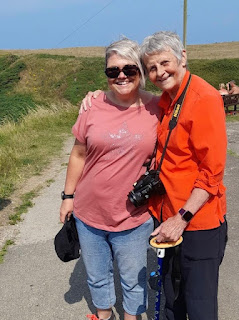

When John’s Campaign went to the House of Commons in March 2022 to explain why legislation is needed to ensure the right to a care
supporter, we were asked who we would like to speak on our behalf. Without
hesitation Nicci Gerrard and I invited Wendy Mitchell. We feel passionately that there should
be ‘nothing about us without us’ but as a dementia campaign it is not always
easy to find people living with the condition who feel able to describe their
experience in public. Wendy was diagnosed with early onset dementia in 2014
when she was 58. At first, she sank into a deep depression but then decided
that there was hope. She would live as
well as she could for as long as she could – and encourage others to do the
same. Since then, thousands -- perhaps millions -- of people have been inspired
by Wendy though her blog ‘Which Me Am I today?’ her books, her public
appearances and her extraordinary feats such as sky diving and wing-riding, undertaken when she discovered that battling dementia had taken away her fear.
Wendy, like Theresa, lived alone and was fiercely independent. She too hated the days when her mind felt suffocated by thick impenetrable fog. Yet even on these worst days, Wendy did not wish to be cared for. It was slightly incongruous that we were asking her to speak in support of the Care Supporter Bill, our attempt to ensure that whenever someone who would find it hard to advocate for themselves is in hospital or a care home – or who is frightened or confused by their situation -- they should have the legal right to a special friend or family member to reassure them or speak on their behalf. Wendy was completely certain that she never wanted to become a hospital in-patient or live in a care home. As a former NHS administrator, she spent years organising her paper work to ensure her wishes were clear, both to paramedics, doctors and her much-loved daughters, Sarah and Gemma, should the time come when she could not articulate them herself. Her refusal was definite.
 |
| Sarah & Wendy |
{kind=link}
Wendy told MPs why she supported our campaign. Firstly because if she were attending an outpatient appointment, her daughter (a nurse) would remember advice she was given, previous medications or allergies, better than she did – and also because the support of her daughter would help show that she mattered. She told MPs a recent experience. She had fallen and dislocated her wrist badly. It had been treated in A&E and then she was summoned to see a consultant.
His first words
were ‘on paper you don’t need an operation as it says you have dementia, what
do you need a left hand for?’ I was stunned into silence unable to find the
right words, so shocked was I at was he was saying. But luckily Sarah was with
me under John’s Campaign once more, and told him, then I found my words and
said I needed a left hand just as much as he did.
https://johnscampaign.org.uk/post/first-hand-experience
There was a collective gasp from people in the room, MPs included but I don’t really know why they should have been surprised. This was March 2022 we had been enduring two years of pandemic restrictions, particularly harmful to people living with disabilities such as dementia and it should have been clear to the smuggest legislator that the lives and deaths and individual CHOICES of people with dementia or other disability were of very little importance when it came to policy-making.
I’m
currently participating in Module 2b, the Welsh section of the Inquiry and find
myself routinely amazed by the absence of active consideration of the needs of
people with dementia or other disability. People known to be at the greatest
risk, people who were loved, people whose well-being should have been at the
heart of policy discussion are simply not there when the evidence is
scrutinised. 68% of all deaths in Wales from Covid-19 in the first months of
the pandemic were deaths of people with disabilities, including dementia. Dementia remained the biggest
killer of women throughout the pandemic as it is today. Many of those
early deaths were not even properly recorded as care homes struggled to cope. GPs
and other health professionals would not visit. Hospital admissions for people living
in care homes were not facilitated. Husbands and wives, children and parents,
dearest friends and loving partners were separated as if at the gate of the
harshest Victorian workhouse. Sometimes the dying were offered only paracetamol. They didn't matter.
Many (probably most)
people who live with dementia to the end, finally live and die in care homes. My
mother did and I’ve written elsewhere that I believe her death was as good as
it could be. Currently John’s Campaign are supporting the magazine Care Talk
in its inaugural palliative care awards, an attempt to celebrate excellence in
the last months of life be it at home, care home, hospice or hospital. A good
death is something that must concern us all.
{kind=link}
Wendy was not going into a care home, neither was she going to be dependent on the daughters she loved, nor would she allow her enemy, dementia, to claim ultimate victory by killing her. Her final book One Last Thing (written with Anna Wharton) sets out her arguments for death to be at the time of her own choice, for assisted dying to be legal in this country. Her argument was that the availability of help to die would allow people with incurable illness, like dementia, to live longer and better, knowing that when they had finally had enough of life, they could be helped to leave.
In February this
year, Wendy Mitchell starved herself to death. It's called Voluntary Stopping Eating and Drinking (VSED) and is legal. Now I'll hand over to her to
explain what she did and why.
https://whichmeamitoday.wordpress.com/2024/02/22/my-final-hug-in-a-mug/